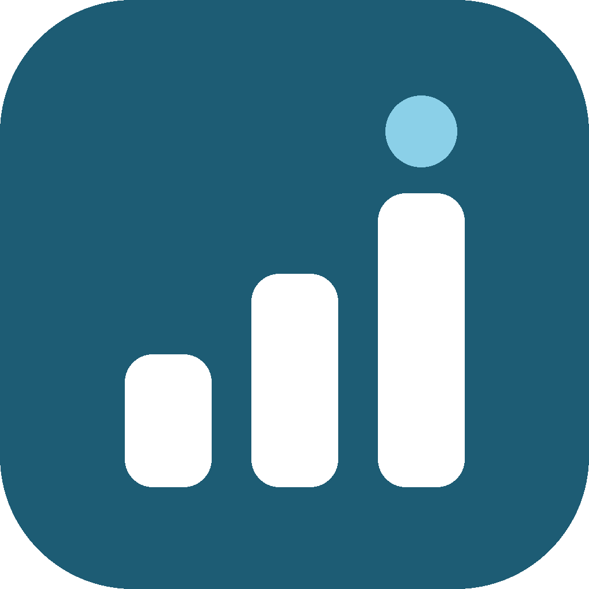

Política de privacidad
Organizador · app personal para Windows y AndroidÚltima actualización: 26 de noviembre de 2026
Qué datos maneja la app
Lo que tú registras: materias, tareas, eventos, comidas, entrenamientos, pedidos, clientes, notas y archivos adjuntos. Todo se guarda en tu propio dispositivo.
Google Drive
Si eliges Conectar con Google, la app pide permiso únicamente para:
- Archivos que la propia app crea en tu Google Drive (permiso
drive.file). La app crea la carpeta "Organizador" y guarda ahí tus datos y adjuntos. No puede ver ni modificar ningún otro archivo de tu Drive. - Tu dirección de correo, solo para mostrarte con qué cuenta estás conectado.
Los datos viajan directamente entre tu dispositivo y Google. No pasan por ningún servidor del desarrollador.
Lo que la app no hace
- No vende, comparte ni transfiere tus datos a terceros.
- No usa publicidad, analítica ni rastreo.
- No usa tus datos de Google para ningún fin distinto a guardar y sincronizar tu propia información.
El uso de la información recibida de las API de Google cumple la Política de datos de usuario de los servicios de API de Google, incluidos los requisitos de uso limitado.
Cómo borrar tus datos
Desconecta la cuenta en Ajustes → Sincronización y borra la carpeta "Organizador" de tu Drive. Puedes retirar el permiso en cualquier momento en myaccount.google.com/permissions. Al desinstalar la app se borran los datos del dispositivo.
Contacto
Para preguntas sobre esta política, abre un mensaje en github.com/Sanderz26/Mi-organizador/issues.